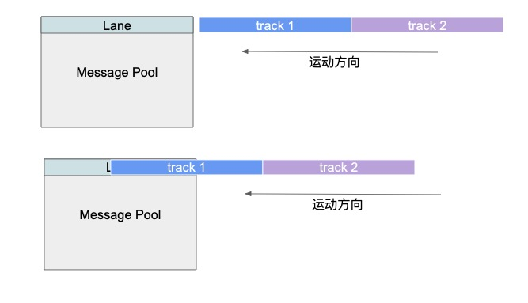
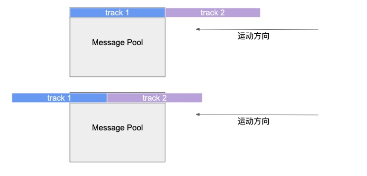
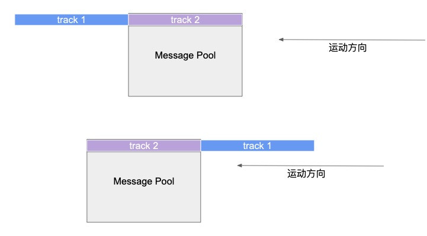
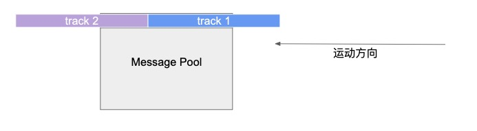
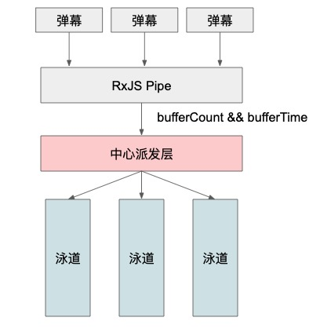
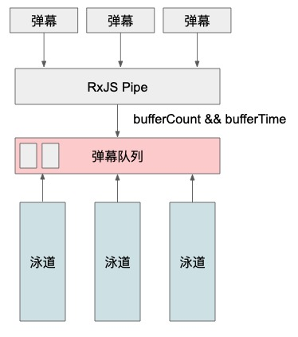

<!DOCTYPE html>


  


<html class="theme-next mist use-motion" lang="">
<head>
  <meta charset="UTF-8"/>
<meta http-equiv="X-UA-Compatible" content="IE=edge" />
<meta name="viewport" content="width=device-width, initial-scale=1, maximum-scale=1"/>
<meta name="theme-color" content="#222">


<meta http-equiv="Cache-Control" content="no-transform" />
<meta http-equiv="Cache-Control" content="no-siteapp" />


  
  
  <link href="/lib/fancybox/source/jquery.fancybox.css?v=2.1.5" rel="stylesheet" type="text/css" />


  
  
  
  

  
    
    
  

  

  

  

  

  
    
    
    <link href="//fonts.googleapis.com/css?family=Lato:300,300italic,400,400italic,700,700italic&subset=latin,latin-ext" rel="stylesheet" type="text/css">
  


<link href="/lib/font-awesome/css/font-awesome.min.css?v=4.6.2" rel="stylesheet" type="text/css" />

<link href="/css/main.css?v=5.1.2" rel="stylesheet" type="text/css" />


  <meta name="keywords" content="Sevens,JS,front-end" />


  <link rel="shortcut icon" type="image/x-icon" href="/favicon.ico?v=5.1.2" />


<meta name="description" content="目前已经完成了一个版本，却是引来了更多的思考。主要要思考的问题有：  如何减少帧单位内的计算量 如何达到弹幕展示均衡 如何减少repaint/reflow泳道的循环运动为减少DOM增删带来资源损耗，初步设计每条泳道会有两条track，根据transform的X坐标实现循环运动。如下图所示：(截图截得不好 ，Pool应该是固定不动的)  同时，之后如果要给弹幕监听事件，只需要委托给泳道只可以了">
<meta property="og:type" content="article">
<meta property="og:title" content="【Vue-baberrage弹幕插件重制(3)】中心分派和竞争获取的思考">
<meta property="og:url" content="https://superhos.github.io/2019/01/19/baberrage-rebuild-3/index.html">
<meta property="og:site_name" content="Sevens Chan blog">
<meta property="og:description" content="目前已经完成了一个版本，却是引来了更多的思考。主要要思考的问题有：  如何减少帧单位内的计算量 如何达到弹幕展示均衡 如何减少repaint/reflow泳道的循环运动为减少DOM增删带来资源损耗，初步设计每条泳道会有两条track，根据transform的X坐标实现循环运动。如下图所示：(截图截得不好 ，Pool应该是固定不动的)  同时，之后如果要给弹幕监听事件，只需要委托给泳道只可以了">
<meta property="og:locale" content="default">
<meta property="og:image" content="https://superhos.github.io/2019/01/19/baberrage-rebuild-3/1.jpg">
<meta property="og:image" content="https://superhos.github.io/2019/01/19/baberrage-rebuild-3/2.jpg">
<meta property="og:image" content="https://superhos.github.io/2019/01/19/baberrage-rebuild-3/3.jpg">
<meta property="og:image" content="https://superhos.github.io/2019/01/19/baberrage-rebuild-3/4.jpg">
<meta property="og:image" content="https://superhos.github.io/2019/01/19/baberrage-rebuild-3/5.jpg">
<meta property="og:image" content="https://superhos.github.io/2019/01/19/baberrage-rebuild-3/6.jpg">
<meta property="og:updated_time" content="2019-01-22T15:05:31.147Z">
<meta name="twitter:card" content="summary">
<meta name="twitter:title" content="【Vue-baberrage弹幕插件重制(3)】中心分派和竞争获取的思考">
<meta name="twitter:description" content="目前已经完成了一个版本，却是引来了更多的思考。主要要思考的问题有：  如何减少帧单位内的计算量 如何达到弹幕展示均衡 如何减少repaint/reflow泳道的循环运动为减少DOM增删带来资源损耗，初步设计每条泳道会有两条track，根据transform的X坐标实现循环运动。如下图所示：(截图截得不好 ，Pool应该是固定不动的)  同时，之后如果要给弹幕监听事件，只需要委托给泳道只可以了">
<meta name="twitter:image" content="https://superhos.github.io/2019/01/19/baberrage-rebuild-3/1.jpg">


<script type="text/javascript" id="hexo.configurations">
  var NexT = window.NexT || {};
  var CONFIG = {
    root: '/',
    scheme: 'Mist',
    sidebar: {"position":"left","display":"post","offset":12,"offset_float":12,"b2t":false,"scrollpercent":false,"onmobile":false},
    fancybox: true,
    tabs: true,
    motion: true,
    duoshuo: {
      userId: '0',
      author: 'Author'
    },
    algolia: {
      applicationID: '',
      apiKey: '',
      indexName: '',
      hits: {"per_page":10},
      labels: {"input_placeholder":"Search for Posts","hits_empty":"We didn't find any results for the search: ${query}","hits_stats":"${hits} results found in ${time} ms"}
    }
  };
</script>


  <link rel="canonical" href="https://superhos.github.io/2019/01/19/baberrage-rebuild-3/"/>


<link rel="stylesheet" href="https://imsun.github.io/gitment/style/default.css">
<script src="https://www.wenjunjiang.win/js/gitment.js"></script>


  <title>【Vue-baberrage弹幕插件重制(3)】中心分派和竞争获取的思考 | Sevens Chan blog</title>
  


</head>

<body itemscope itemtype="http://schema.org/WebPage" lang="default">

  
  
    
  

  <div class="container sidebar-position-left page-post-detail ">
    <div class="headband"></div>

    <header id="header" class="header" itemscope itemtype="http://schema.org/WPHeader">
      <div class="header-inner"><div class="site-brand-wrapper">
  <div class="site-meta ">
    

    <div class="custom-logo-site-title">
      <a href="/"  class="brand" rel="start">
        <span class="logo-line-before"><i></i></span>
        <span class="site-title">Sevens Chan blog</span>
        <span class="logo-line-after"><i></i></span>
      </a>
    </div>
      
        <p class="site-subtitle">陈日天技术博客</p>
      
  </div>

  <div class="site-nav-toggle">
    <button>
      <span class="btn-bar"></span>
      <span class="btn-bar"></span>
      <span class="btn-bar"></span>
    </button>
  </div>
</div>

<nav class="site-nav">
  

  
    <ul id="menu" class="menu">
      
        
        <li class="menu-item menu-item-home">
          <a href="/" rel="section">
            
              <i class="menu-item-icon fa fa-fw fa-home"></i> <br />
            
            Home
          </a>
        </li>
      
        
        <li class="menu-item menu-item-archives">
          <a href="/archives/" rel="section">
            
              <i class="menu-item-icon fa fa-fw fa-archive"></i> <br />
            
            Archives
          </a>
        </li>
      
        
        <li class="menu-item menu-item-tags">
          <a href="/tags/" rel="section">
            
              <i class="menu-item-icon fa fa-fw fa-tags"></i> <br />
            
            Tags
          </a>
        </li>
      

      
    </ul>
  

  
</nav>


 </div>
    </header>

    <main id="main" class="main">
      <div class="main-inner">
        <div class="content-wrap">
          <div id="content" class="content">
            

  <div id="posts" class="posts-expand">
    

  

  
  
  

  <article class="post post-type-normal" itemscope itemtype="http://schema.org/Article">
  
  
  
  <div class="post-block">
    <link itemprop="mainEntityOfPage" href="https://superhos.github.io/2019/01/19/baberrage-rebuild-3/">

    <span hidden itemprop="author" itemscope itemtype="http://schema.org/Person">
      <meta itemprop="name" content="SevensChan">
      <meta itemprop="description" content="">
      <meta itemprop="image" content="/images/avatar.gif">
    </span>

    <span hidden itemprop="publisher" itemscope itemtype="http://schema.org/Organization">
      <meta itemprop="name" content="Sevens Chan blog">
    </span>

    
      <header class="post-header">

        
        
          <h1 class="post-title" itemprop="name headline">【Vue-baberrage弹幕插件重制(3)】中心分派和竞争获取的思考</h1>
        

        <div class="post-meta">
          <span class="post-time">
            
              <span class="post-meta-item-icon">
                <i class="fa fa-calendar-o"></i>
              </span>
              
                <span class="post-meta-item-text">Posted on</span>
              
              <time title="Post created" itemprop="dateCreated datePublished" datetime="2019-01-19T09:26:17+08:00">
                2019-01-19
              </time>
            

            

            
          </span>

          

          
            
          

          
          

          

          

          

        </div>
      </header>
    

    
    
    
    
    <div class="post-body" itemprop="articleBody">

      
      

      
        <p>目前已经完成了一个版本，却是引来了更多的思考。<br>主要要思考的问题有：</p>
<ol>
<li>如何减少帧单位内的计算量</li>
<li>如何达到弹幕展示均衡</li>
<li>如何减少repaint/reflow<br><h2 id="泳道的循环运动"><a href="#泳道的循环运动" class="headerlink" title="泳道的循环运动"></a>泳道的循环运动</h2>为减少DOM增删带来资源损耗，初步设计每条泳道会有两条track，根据transform的X坐标实现循环运动。如下图所示：<br><br><br><br><br>(截图截得不好 ，Pool应该是固定不动的)</li>
</ol>
<p>同时，之后如果要给弹幕监听事件，只需要委托给泳道只可以了，减少了大量的Listener。</p>
<p>优点：减少DOM增删操作，循环只需要更改transformX。<br>缺点：两条track必须固定宽度为泳池宽度，这样才能构成环路。</p>
<h2 id="弹幕派发"><a href="#弹幕派发" class="headerlink" title="弹幕派发"></a>弹幕派发</h2><p>如上篇所说，整个弹幕泳池会分为多个不相关联的泳道（Lane），目的是减少每帧的计算量，由原来的每帧要计算每个弹幕DOM的移动量降低为只需计算泳道的移动量。<br>而关于弹幕注入泳道的部分目前有两个解决方案：</p>
<p>首先两个方案都使用了Rxjs bufferTime和bufferCount管道来做弹幕入口，防止弹幕井喷。</p>
<p><strong>#1</strong> 然后增加中心派发层，计算每个泳道的空闲情况，派发弹幕到指定的泳道</p>
<p></p>
<p>优点：能够中心统筹泳道，均衡每个泳道的弹幕数量<br>缺点：计算量集中在了中心派发层</p>
<p><strong>#2</strong> 使用弹幕队列，由泳道各自计算各自的空闲情况，争夺队列弹幕。</p>
<p></p>
<p>优点：去中心化，降低中心计算量<br>缺点：泳道之间不能通讯，无法得知总体弹幕均衡情况，有机会出现一条泳道抢夺所有弹幕资源的情况。</p>
<h2 id="结论"><a href="#结论" class="headerlink" title="结论"></a>结论</h2><p>各有优点也各有缺点，因此也仍在思考这部分的设计。有新的解决方案再更新上来。</p>

      
    </div>
    
    
    
    

    

    

    

    <footer class="post-footer">
      

      
      
      

      
        <div class="post-nav">
          <div class="post-nav-next post-nav-item">
            
              <a href="/2019/01/19/Towards-Quantifying-the-Development-Value-ofCode-Contributions/" rel="next" title="【读书笔记】如何量化程序员对项目的贡献">
                <i class="fa fa-chevron-left"></i> 【读书笔记】如何量化程序员对项目的贡献
              </a>
            
          </div>

          <span class="post-nav-divider"></span>

          <div class="post-nav-prev post-nav-item">
            
              <a href="/2019/01/23/baberrage-rebuild-4/" rel="prev" title="【Vue-baberrage弹幕插件重制(4)】泳道Track与弹幕">
                【Vue-baberrage弹幕插件重制(4)】泳道Track与弹幕 <i class="fa fa-chevron-right"></i>
              </a>
            
          </div>
        </div>
      

      
      
    </footer>
  </div>
  
  
  
  </article>


    <div class="post-spread">
      
    </div>
  </div>


          </div>
          


          
  <div class="comments" id="comments">
    <div id="gitment-comments"></div> 
  </div>


    


<script>
const gitment = new Gitment({
    id: "【Vue-baberrage弹幕插件重制(3)】中心分派和竞争获取的思考",
    owner: 'superhos',
    repo: 'superhos.github.io',
    oauth: {
        client_id: "955a1a460b0c407643cf",
        client_secret: "2a328b1118b9fdd8a9b773214b8324b94cf3cb1a"
    }
});
gitment.render(document.getElementById('gitment-comments'));
</script>
        </div>
        
          
  
  <div class="sidebar-toggle">
    <div class="sidebar-toggle-line-wrap">
      <span class="sidebar-toggle-line sidebar-toggle-line-first"></span>
      <span class="sidebar-toggle-line sidebar-toggle-line-middle"></span>
      <span class="sidebar-toggle-line sidebar-toggle-line-last"></span>
    </div>
  </div>

  <aside id="sidebar" class="sidebar">
    
    <div class="sidebar-inner">

      

      
        <ul class="sidebar-nav motion-element">
          <li class="sidebar-nav-toc sidebar-nav-active" data-target="post-toc-wrap" >
            Table of Contents
          </li>
          <li class="sidebar-nav-overview" data-target="site-overview">
            Overview
          </li>
        </ul>
      

      <section class="site-overview sidebar-panel">
        <div class="site-author motion-element" itemprop="author" itemscope itemtype="http://schema.org/Person">
          
          <p class="site-author-name" itemprop="name">SevensChan</p>
           
              <p class="site-description motion-element" itemprop="description"></p>
          
        </div>
        <nav class="site-state motion-element">

          
            <div class="site-state-item site-state-posts">
              <a href="/archives/">
                <span class="site-state-item-count">78</span>
                <span class="site-state-item-name">posts</span>
              </a>
            </div>
          

          

          
            
            
            <div class="site-state-item site-state-tags">
              <a href="/tags/index.html">
                <span class="site-state-item-count">7</span>
                <span class="site-state-item-name">tags</span>
              </a>
            </div>
          

        </nav>

        

        <div class="links-of-author motion-element">
          
        </div>

        
        

        
        

        


      </section>

      
      <!--noindex-->
        <section class="post-toc-wrap motion-element sidebar-panel sidebar-panel-active">
          <div class="post-toc">

            
              
            

            
              <div class="post-toc-content"><ol class="nav"><li class="nav-item nav-level-2"><a class="nav-link" href="#泳道的循环运动"><span class="nav-number">1.</span> <span class="nav-text">泳道的循环运动</span></a></li><li class="nav-item nav-level-2"><a class="nav-link" href="#弹幕派发"><span class="nav-number">2.</span> <span class="nav-text">弹幕派发</span></a></li><li class="nav-item nav-level-2"><a class="nav-link" href="#结论"><span class="nav-number">3.</span> <span class="nav-text">结论</span></a></li></ol></div>
            

          </div>
        </section>
      <!--/noindex-->
      

      

    </div>
  </aside>


        
      </div>
    </main>

    <footer id="footer" class="footer">
      <div class="footer-inner">
        <div class="copyright" >
  
  &copy; 
  <span itemprop="copyrightYear">2019</span>
  <span class="with-love">
    <i class="fa fa-SEVENS CHAN"></i>
  </span>
  <span class="author" itemprop="copyrightHolder">SevensChan</span>
</div>


<div class="powered-by">
  Powered by <a class="theme-link" href="https://hexo.io">Hexo</a>
</div>

<div class="theme-info">
  Theme -
  <a class="theme-link" href="https://github.com/iissnan/hexo-theme-next">
    NexT.Mist
  </a>
</div>


        

        
      </div>
    </footer>

    
      <div class="back-to-top">
        <i class="fa fa-arrow-up"></i>
        
      </div>
    

  </div>

  

<script type="text/javascript">
  if (Object.prototype.toString.call(window.Promise) !== '[object Function]') {
    window.Promise = null;
  }
</script>


  


  
  <script type="text/javascript" src="/lib/jquery/index.js?v=2.1.3"></script>

  
  <script type="text/javascript" src="/lib/fastclick/lib/fastclick.min.js?v=1.0.6"></script>

  
  <script type="text/javascript" src="/lib/jquery_lazyload/jquery.lazyload.js?v=1.9.7"></script>

  
  <script type="text/javascript" src="/lib/velocity/velocity.min.js?v=1.2.1"></script>

  
  <script type="text/javascript" src="/lib/velocity/velocity.ui.min.js?v=1.2.1"></script>

  
  <script type="text/javascript" src="/lib/fancybox/source/jquery.fancybox.pack.js?v=2.1.5"></script>


  


  <script type="text/javascript" src="/js/src/utils.js?v=5.1.2"></script>

  <script type="text/javascript" src="/js/src/motion.js?v=5.1.2"></script>


  
  

  
  <script type="text/javascript" src="/js/src/scrollspy.js?v=5.1.2"></script>
<script type="text/javascript" src="/js/src/post-details.js?v=5.1.2"></script>


  


  <script type="text/javascript" src="/js/src/bootstrap.js?v=5.1.2"></script>


  


  


  


  


  

  

  

  

  

  

</body>
</html>
